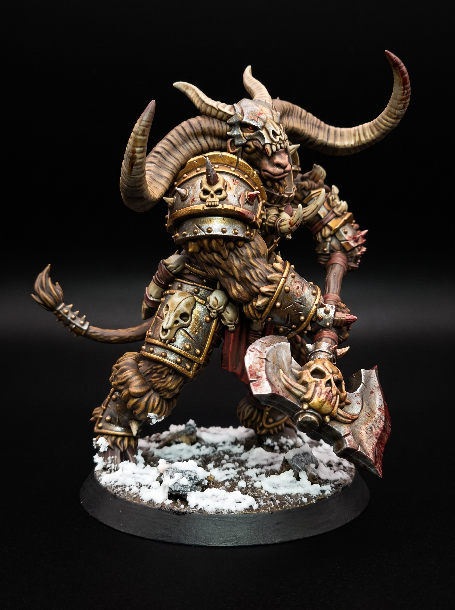
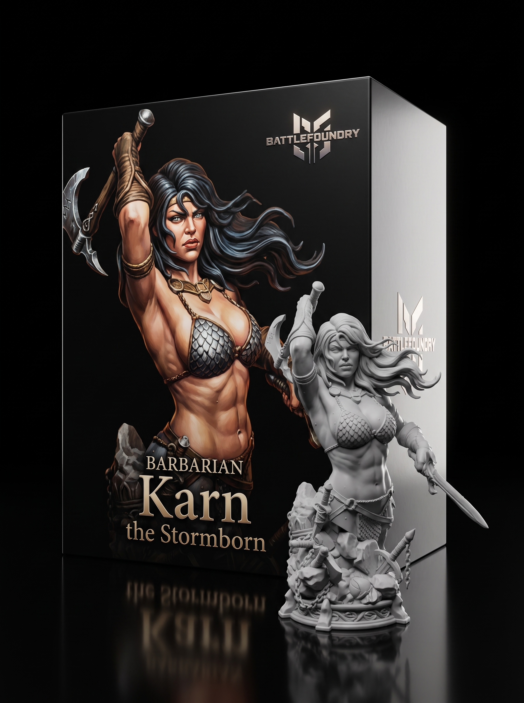
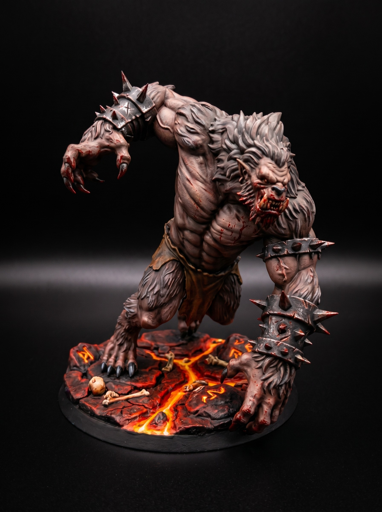

The Chronicle
Fantasy, sci-fi, and grimdark miniatures for D&D and tabletop wargaming. New free STLs, every single day.

The Iron Vanguard do not carry shields. Their plate is two inches of cold-rolled iron. Nothing short of a ballista punches through it. They…

The Ashen Order built the Dread Chaplains to hold the eastern breaches. They forged their armor from cold iron and grave dust. No living…

The Ash Knights do not bury their dead. They forge the ashes directly into plate armor. Every piece of iron carries the weight of a fallen…